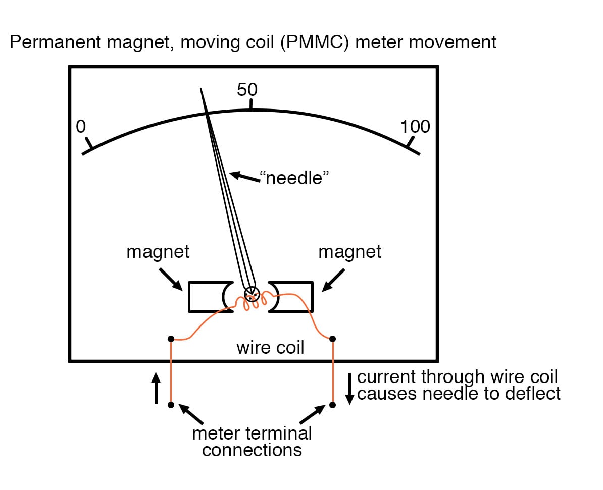
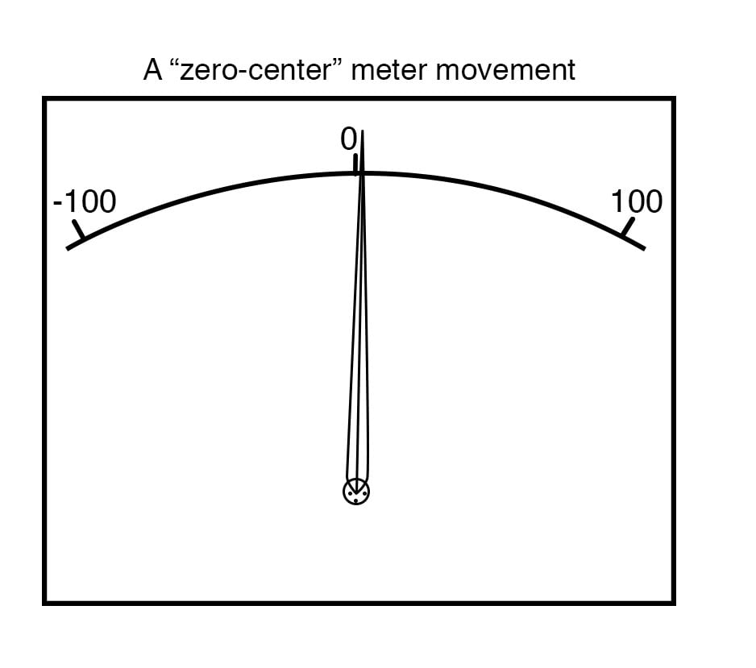
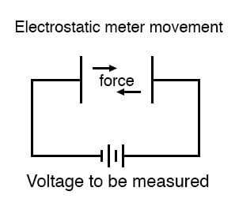
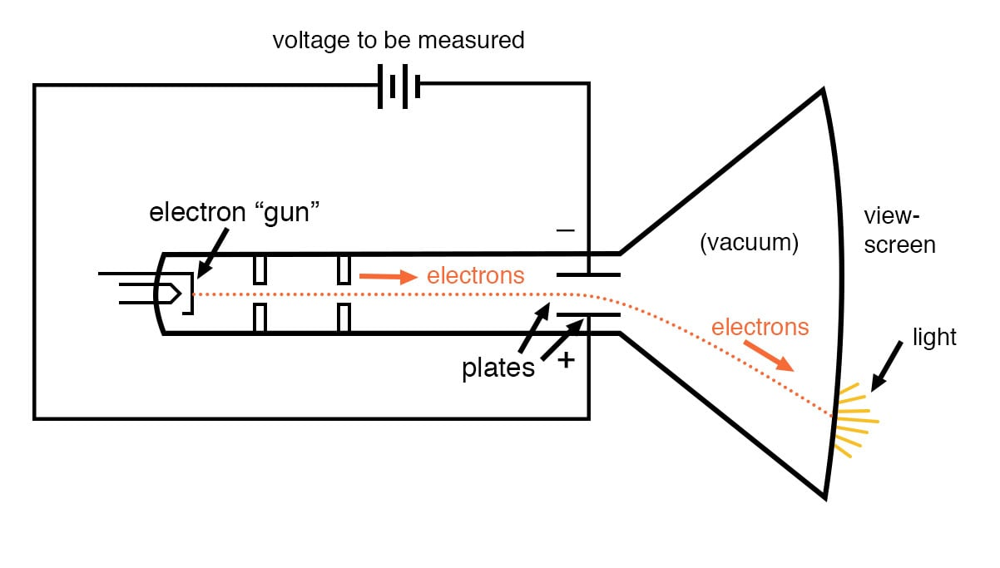
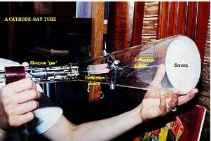

08. DC Metering Circuits
What is a Meter?
A meter is any device built to accurately detect and display an electrical quantity in a form readable by a human being. Usually, this “readable form” is visual: motion of a pointer on a scale, a series of lights arranged to form a “bar graph,” or some sort of display composed of numerical figures. In the analysis and testing of circuits, there are meters designed to accurately measure the basic quantities of voltage, current, and resistance. There are many other types of meters as well, but this chapter primarily covers the design and operation of the basic three.
Most modern meters are “digital” in design, meaning that their readable display is in the form of numerical digits. Older designs of meters are mechanical in nature, using some kind of pointer device to show quantity of measurement. In either case, the principles applied in adapting a display unit to the measurement of (relatively) large quantities of voltage, current, or resistance are the same.
What is a Meter Movement?
The display mechanism of a meter is often referred to as a movement, borrowing from its mechanical nature to move a pointer along a scale so that a measured value may be read. Though modern digital meters have no moving parts, the term “movement” may be applied to the same basic device performing the display function.
Electromagnetic Meter Movement
The design of digital “movements” is beyond the scope of this chapter, but mechanical meter movement designs are very understandable. Most mechanical movements are based on the principle of electromagnetism: that electric current through a conductor produces a magnetic field perpendicular to the axis of current flow. The greater the electric current, the stronger the magnetic field produced.
If the magnetic field formed by the conductor is allowed to interact with another magnetic field, a physical force will be generated between the two sources of fields. If one of these sources is free to move with respect to the other, it will do so as current is conducted through the wire, the motion (usually against the resistance of a spring) being proportional to strength of current.
The first meter movements built were known as galvanometers, and were usually designed with maximum sensitivity in mind. A very simple galvanometer may be made from a magnetized needle (such as the needle from a magnetic compass) suspended from a string, and positioned within a coil of wire. Current through the wire coil will produce a magnetic field which will deflect the needle from pointing in the direction of earth’s magnetic field. An antique string galvanometer is shown in the following photograph:

Such instruments were useful in their time, but have little place in the modern world except as proof-of-concept and elementary experimental devices. They are highly susceptible to motion of any kind, and to any disturbances in the natural magnetic field of the earth. Now, the term “galvanometer” usually refers to any design of electromagnetic meter movement built for exceptional sensitivity, and not necessarily a crude device such as that shown in the photograph.
Practical electromagnetic meter movements can be made now where a pivoting wire coil is suspended in a strong magnetic field, shielded from the majority of outside influences. Such an instrument design is generally known as a permanent-magnet, moving coil, or PMMC movement:

In the picture above, the meter movement “needle” is shown pointing somewhere around 35 percent of full-scale, zero being full to the left of the arc and full-scale being completely to the right of the arc. An increase in measured current will drive the needle to point further to the right and a decrease will cause the needle to drop back down toward its resting point on the left. The arc on the meter display is labeled with numbers to indicate the value of the quantity being measured, whatever that quantity is.
In other words, if it takes 50 µA of current to drive the needle fully to the right (making this a “50 µA full-scale movement”), the scale would have 0 µA written at the very left end and 50 µA at the very right, 25 µA being marked in the middle of the scale. In all likelihood, the scale would be divided into much smaller graduating marks, probably every 5 or 1 µA, to allow whoever is viewing the movement to infer a more precise reading from the needle’s position.
The meter movement will have a pair of metal connection terminals on the back for current to enter and exit. Most meter movements are polarity-sensitive, one direction of current driving the needle to the right and the other driving it to the left. Some meter movements have a needle that is spring-centered in the middle of the scale sweep instead of to the left, thus enabling measurements of either polarity:

Common polarity-sensitive movements include the D’Arsonval and Weston designs, both PMMC-type instruments. Current in one direction through the wire will produce a clockwise torque on the needle mechanism, while current in the other direction will produce a counter-clockwise torque.
Some meter movements are polarity-insensitive, relying on the attraction of an unmagnetized, movable iron vane toward a stationary, current-carrying wire to deflect the needle. Such meters are ideally suited for the measurement of alternating current (AC). A polarity-sensitive movement would just vibrate back and forth uselessly if connected to a source of AC.
Electrostatic Meter Movement
While most mechanical meter movements are based on electromagnetism (current flow through a conductor creating a perpendicular magnetic field), a few are based on electrostatics: that is, the attractive or repulsive force generated by electric charges across space. This is the same phenomenon exhibited by certain materials (such as wax and wool) when rubbed together. If a voltage is applied between two conductive surfaces across an air gap, there will be a physical force attracting the two surfaces together capable of moving some kind of indicating mechanism.
That physical force is directly proportional to the voltage applied between the plates and inversely proportional to the square of the distance between the plates. The force is also irrespective of polarity, making this a polarity-insensitive type of meter movement:

Unfortunately, the force generated by the electrostatic attraction is very small for common voltages. In fact, it is so small that such meter movement designs are impractical for use in general test instruments. Typically, electrostatic meter movements are used for measuring very high voltages (many thousands of volts).
One great advantage of the electrostatic meter movement, however, is the fact that it has extremely high resistance, whereas electromagnetic movements (which depend on the flow of current through a wire to generate a magnetic field) are much lower in resistance. As we will see in greater detail to come, greater resistance (resulting in less current drawn from the circuit under test) makes for a better voltmeter.
Cathode Ray Tube
A much more common application of electrostatic voltage measurement is seen in a device known as a Cathode Ray Tube, or CRT. These are special glass tubes, very similar to television viewscreen tubes. In the cathode ray tube, a beam of electrons traveling in a vacuum are deflected from their course by voltage between pairs of metal plates on either side of the beam.
Because electrons are negatively charged, they tend to be repelled by the negative plate and attracted to the positive plate. A reversal of voltage polarity across the two plates will result in a deflection of the electron beam in the opposite direction, making this type of meter “movement” polarity-sensitive:

The electrons, having much less mass than metal plates, are moved by this electrostatic force very quickly and readily. Their deflected path can be traced as the electrons impinge on the glass end of the tube where they strike a coating of phosphorus chemical, emitting a glow of light seen outside of the tube. The greater the voltage between the deflection plates, the further the electron beam will be “bent” from its straight path, and the further the glowing spot will be seen from center on the end of the tube.
A photograph of a CRT is shown here:

In a real CRT, as shown in the above photograph, there are two pairs of deflection plates rather than just one. In order to be able to sweep the electron beam around the whole area of the screen rather than just in a straight line, the beam must be deflected in more than one dimension.
Although these tubes are able to accurately register small voltages, they are bulky and require electrical power to operate (unlike electromagnetic meter movements, which are more compact and actuated by the power of the measured signal current going through them). They are also much more fragile than other types of electrical metering devices. Usually, cathode ray tubes are used in conjunction with precise external circuits to form a larger piece of test equipment known as an oscilloscope, which has the ability to display a graph of voltage over time, a tremendously useful tool for certain types of circuits where voltage and/or current levels are dynamically changing.
Full-Scale Indication
Whatever the type of meter or size of meter movement, there will be a rated value of voltage or current necessary to give full-scale indication. In electromagnetic movements, this will be the “full-scale deflection current” necessary to rotate the needle so that it points to the exact end of the indicating scale. In electrostatic movements, the full-scale rating will be expressed as the value of voltage resulting in the maximum deflection of the needle actuated by the plates, or the value of voltage in a cathode-ray tube which deflects the electron beam to the edge of the indicating screen. In digital “movements,” it is the amount of voltage resulting in a “full-count” indication on the numerical display: when the digits cannot display a larger quantity.
The task of the meter designer is to take a given meter movement and design the necessary external circuitry for full-scale indication at some specified amount of voltage or current. Most meter movements (electrostatic movements excepted) are quite sensitive, giving full-scale indication at only a small fraction of a volt or an amp. This is impractical for most tasks of voltage and current measurement. What the technician often requires is a meter capable of measuring high voltages and currents.
By making the sensitive meter movement part of a voltage or current divider circuit, the movement’s useful measurement range may be extended to measure far greater levels than what could be indicated by the movement alone. Precision resistors are used to create the divider circuits necessary to divide voltage or current appropriately. One of the lessons you will learn in this chapter is how to design these divider circuits.
REVIEW:
- A “movement” is the display mechanism of a meter.
- Electromagnetic movements work on the principle of a magnetic field being generated by electric current through a wire. Examples of electromagnetic meter movements include the D’Arsonval, Weston, and iron-vane designs.
- Electrostatic movements work on the principle of physical force generated by an electric field between two plates.
- Cathode Ray Tubes (CRT’s) use an electrostatic field to bend the path of an electron beam, providing indication of the beam’s position by light created when the beam strikes the end of the glass tube.